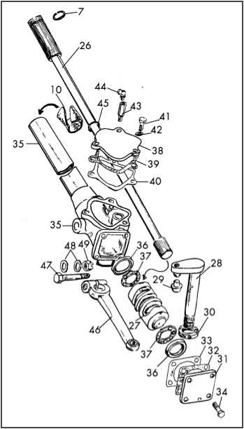
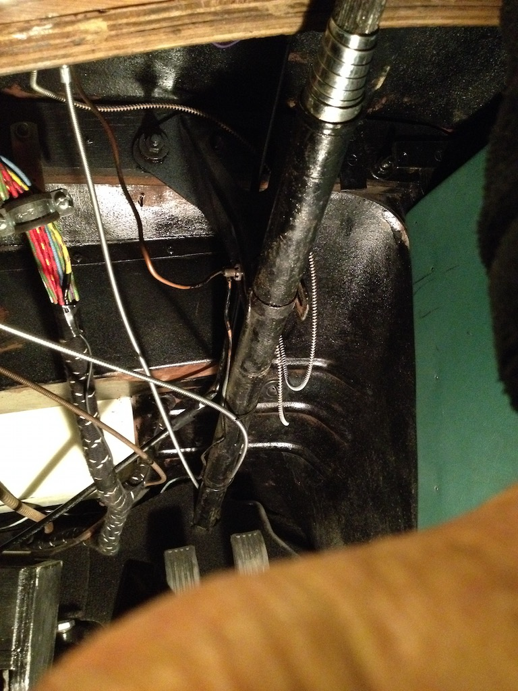
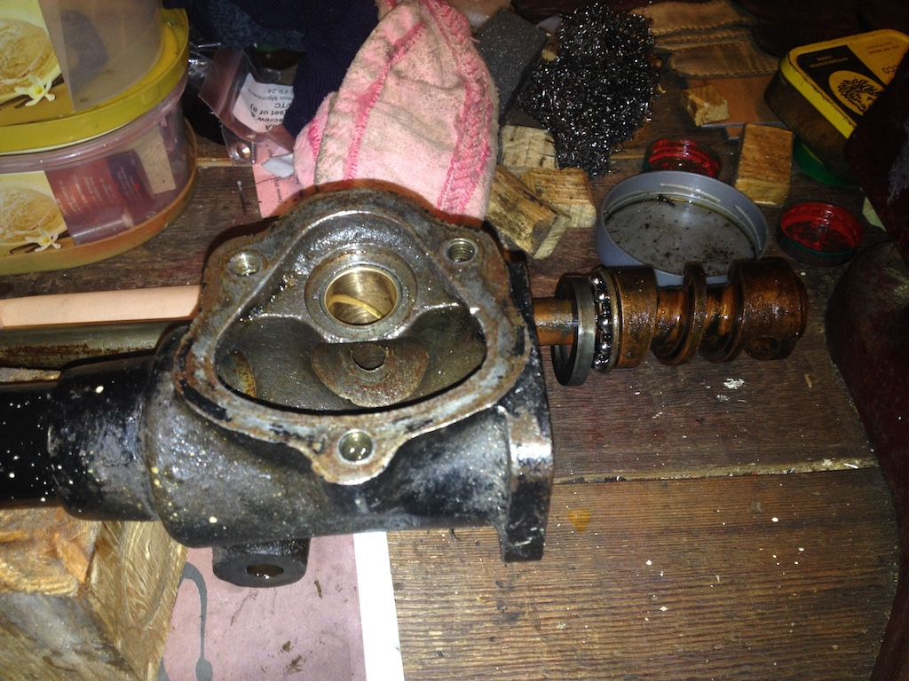
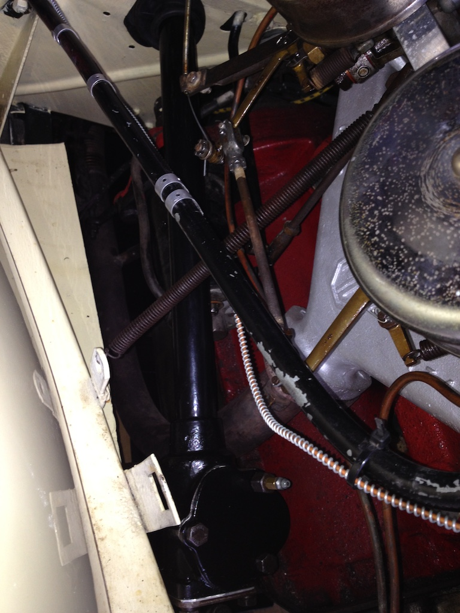

Steering Box Oil Seal
 The Bishop Cam steering box on TC4985 had leaked oil since I’ve owned the car, some 3½ years now. So I kept it topped up with EP140 (GL4). I’ve taken off the drop arm in the past to crack test it, but I thought it was time to replace the oil seal. So in October 2018 I decided that the time was right to tackle the job and I bought a new seal from John James. However, when I removed the sector shaft I found that there was no rebate in the box for an oil seal. Also, the sector shaft was running in two bushes that looked very much like king pin bushes, since they had a hole in the middle and a spiral groove.
The Bishop Cam steering box on TC4985 had leaked oil since I’ve owned the car, some 3½ years now. So I kept it topped up with EP140 (GL4). I’ve taken off the drop arm in the past to crack test it, but I thought it was time to replace the oil seal. So in October 2018 I decided that the time was right to tackle the job and I bought a new seal from John James. However, when I removed the sector shaft I found that there was no rebate in the box for an oil seal. Also, the sector shaft was running in two bushes that looked very much like king pin bushes, since they had a hole in the middle and a spiral groove.
When I asked for advice on the mg-tabc forum Eric Worpe replied:
I doubt if Bishops Cam steering boxes were originally bushed as they were produced as cheaply as possible, their main selling point. The box itself is probably made from malleable cast iron, which is stronger than cast iron but still contains sufficient graphite to act as an effective self-lubricant. A hardened steel shaft would be most suited to running in malleable cast iron; however, this is not possible when the shaft is required to be tough and fatigue resistant. The sector shaft is therefore not hard enough to enable good bearing surfaces to be achieved. That some Bishops Cam boxes have lasted so well is testament to regular topping up with EP 140 oil, the idea of omitting an oil seal at the end of the sector shaft housing is intriguing and could only be considered if regular topping up with oil was guaranteed.
This diagram, ‘borrowed’ from the Anglo Parts 5th edition catalogue, shows all the parts associated with the ‘business end’ of the steering column on a TC. It shows the sector shaft oil seal (item 30) that can only be fitted by cutting a rebate in the bottom of the box. Luckily, another member of the West Sussex MG Owners Club once owned a machine shop and still has access to some equipment, offered to do the work.
So I lifted the front of the TC just an inch or two using the screw jack and the hydraulic bottle jack, to put the front axle on the adjustable stands set at their lowest level and removed the offside wheel. Then I separated the drop arm from the sector shaft, removed the bolt that holds the box to the chassis and the bolt on the steering wheel hub. The steering wheel wouldn’t pull off the shaft, so undid the four bolts that hold the wheel hub together and removed the wheel from the lower part of the hub. The shaft and hub are splined, so I used a hub puller to get the hub to within an inch of the end of the shaft, using an aluminium drift until it would not go further into the tapered centre of the hub. Then I hammered a screwdriver blade into the slot in the hub and gently tapped the hub off the shaft. The splines in the hub have some damage that I cleaned up with a needle file.
Having snipped the cable ties that were holding various cables in place and removed the bolt through the clamp under the dashboard I pulled the clamp, spring and cap off the column. As you can see in the photo, the spring seems to have been upside down! Then I removed the column from the car.
With the column on the bench I drained what oil remained in the box, removed the end plate and bottom bearing and withdrew the inner column and cam assembly. The bearings feel and look good and there was no end play. There is a needle bearing at the top end of the column (part of the Tomkins kit) and a rubber washer on the inner column which I assume is an anti-vibration ring. Inside the box you can see that the existing top bush bridges the aperture in the bearing housing formed by the relief needed to clear the worm cam. There is no cir-clip at the top of the column as indicated in the diagram, but there is what looks like a piece of split pin wrapped around the column just below the spines. This prevents the upper bear from being slipped off the column.
I removed both bushes by filing flats on a washer so that it would drop through the bush so as to get behind it. I then used a bolt to withdraw it into a large socket. For the last bit I put the bolt in from the other side and tapped it out with a hammer. To get the bush moving I had to tap it in a little before pulling it out. To remove the other bush I tapped it from the other side (which would have been easier for the first bush also). The bushes were not king pin bushes, but both were the same size, had spiral grooves in them and a cut longitudinally so that they would compress as they were inserted. The top bush had a hole in it to clear the cam.
Chris Rickard called to look at the steering box. He thought that the job was simpler than he had thought, so he took away the box/column and oil seal. A few days later he returned it, having cut a rebate for the lip seal.
Originally I had intended buying new bushes from Roger Furneau, but he only gave part of the information for which I had asked and later decided to put up his price, saying that they were more expensive elsewhere and that they were difficult to fit. So I refitted the old bushes. I couldn't 'feel' any play in them, although Chris 'clocked' them and said they were slightly oval, but not too bad.
Before refitting the column I wire brushed and de-greased it and gave it a spray coat of primer. However, it seemed that some areas of the column still had grease on them and so the primer bubbled up. I re-primed parts of the column the next day. Then I gave is two coats of black Hammerite
On the Bishop Cam steering box there is an end plate, that holds the cam and the inner column in place, and a top plate that holds the sector shaft in place. The top plate had been replaced with a Tomkins Kit, placing a roller bearing on top of the sector shaft rather than just the surface of the top plate. However, Eric Worpe warns of this placing too much stress on the sector shaft arm, which can break off! So I decided to replace the original top plate. Both the top plate and end plate use shims for adjustment. However, they each have a different purpose. The shims under the end plate allow the plate to pinch the ball bearings at either end of the cam, whereas the shims under the top plate adjust the end float on the sector shaft. The end plate shims had clearly been home-made, although you can buy shims of 3, 5 and 10 thou in thickness. The 'home-made' shims were a total of 67 thou, one of 60 thou and one of 7 thou! However, there was no gasket. With a new gasket in place I removed the 7 thou shim so as to get the cam to turn smoothly, hopefully without too much end float. The original top plate came with three shims. I didn't measure them, but two were thinner than the third. With a gasket, I removed one of the thinner shims, which seems to minimise the sector shaft end float.
When refitting the column I fitted the rubber draft excluder that I had bought in September 2015. I didn't have the plate to fit around it, but I could simply push it through the hole in the bulkhead. I then filled the steering box with oil, bolted on the top plate (with shims and gasket), reconnected the drop arm and put the wheel on. I used a length of wood to ensure that the wheels were pointing forward. I had to re-assemble the steering wheel before putting it on the column, but having cleaned the splines with a needle file, the hub slid easily on to the column and the pinch bolt would not tighten enough to hold the hub on the splines of the column. My 'cleaning' of the splines must have been too vigorous. So I wrapped some PTFE tape around the splines at the top and where the pinch bolt is at the bottom. That seemed to work.
After a short test run I checked that the box was still full of oil then tied up the cables under the dash. I had forgotten to install the spiral spring so I removed the steering wheel, fitted the spring (the right way up) and refitted wheel, this time using stud lock to, hopefully, fill the splines. I held the wheel against the spring while tightening the clamp bolt and then held it in place for 15 minutes. After a 52 mile run the wheel seems to be firmly in place.
There are no photos of the installed seal since I inadvertently deleted them from the camera before I had downloaded them!
© David James 2019 Last updated: 8th February 2019